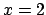
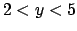

Next: 3.6.3 Steps Up: 3.6 Barcharts and Histograms Previous: 3.6.1 Basic Operation Contents Index
If several datapoints are supplied at a common  -coordinate to the
boxes or wboxes plot styles, then the bars are stacked one
above another into a stacked barchart. Consider the following datafile:
-coordinate to the
boxes or wboxes plot styles, then the bars are stacked one
above another into a stacked barchart. Consider the following datafile:
1 1 2 2 2 3 3 4
The second bar at  would be placed on top of the first, spanning the range , and having the same width as the first. If plot colours are being automatically selected from the palette, then a different palette colour is used to plot the upper bar.